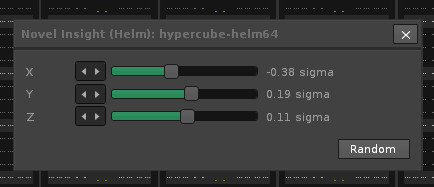

Hypercube VST is a parameter reducer plugin for VST2 instruments and effects. It reduces the number of synthesizer/effect parameters to just three which makes it easier to find new sounds than changing 100+ parameters that may be available through the normal user interface.
In order to to do parameter reduction a VST module must have roughly more presets of good instruments/effects than there are synthesizer parameters. The existing good presets are used to find "three dimensional space of good sounds", which can be then explored by using only three parameters: X, Y and Z. Unfortunately, this means that parameter reduction doesn't work for many VST instruments because they don't allow reading and setting synthesizer parameters using VST2 specification functions. Additionally, Hypercube VST currently doesn't support newer VST3 instruments and only supports 64bit VST2 files.
To calculate parameter reduction you start Hypercube VST program. The program requires Java 64bit installation so please make sure to install 64bit Java (and not Java 32bit) before attempting to start Hypercube VST program. After starting the program select your VST directory from the menu by selecting "File -> Select VST folder.." after this click button "Scan VST" which goes through VST DLL files and reports if it is possible to create parameter reducted VST instrument for that file.
 You can then make sure that "Model complexity" is set to default 1 and click "Calculate VST" button to calculate parameter reduction and create "hypercube-<vstfile>.dll" VST files to the VST folder. The generated Hypercube DLL files can be loaded by DAW host programs like Cubase as proper VST instruments which have only three synthesizer parameters. Because calculations can take several hours, you might also want to calculate and create parameter reducer VST DLL for a single VST instrument. This can be done by selecting a single file using "File -> Select one VST file.." and by then clicking the "Calculate VST" button. In order to uninstall Hypercube VST files you need to manually remove all files having a word "hypercube" from the VST folder.
Once you have computed parameter reduction for your VST files, you might want to try to use advanced settings in order to try to get better results and new sounds. Be warned that good results are not always guaranteed (you might need to try to compute parameter reduction multiple times) and computations can take 8-24 hours with only marginally better results. You can select "Deep mode (beta)" from the File menu which calculates parameter reduction using deep learning algorithms and set model complexity to high 10-20 in order to hopefully get good results. The calculations to calculate parameter reduction for a single VST file is SLOW so fast CPU is required.
The more complex model means that the generated VST is slower and for example automation of synth parameters don't work because mapping 3 parameters to full synth parameters takes too much time (no realtime performance).
Hypercube VST modifies PATH environment variable to point to "C:\Program Files\Novel Insight Hypercube VST" which contains DLL files used by hypercube wrapper plugins. However, if there are earlier reference in PATH to same DLLs, earlier version DLLs (especially libstdc++-6.dll file) are used which don't work and plugin cannot be loaded. The fix is to remove earlier reference to same DLLs in PATH (This can happen, for example, if you have installed a compiler that distributes same DLL files).
Bad results. You can try to increase complexity to 10 (20+ in deep mode) or simple try to recalculate parameter reduction again to get slightly different results.
The unicode support for filenames may break sometimes as it is not fully tested. The fix is to rename all paths and filenames to have only ASCII characters (mostly A-Z, 0-9).
Hypercube VST is © Copyright 2020 Tomas Ukkonen.
Hypercube software can be used and distributed freely but it's closed source software and reverse engineering it is prohibited.
If you use this software please help me (tomas.ukkonen@iki.fi) to get a job as a Scientist or Data Scientist again (I live in Finland).